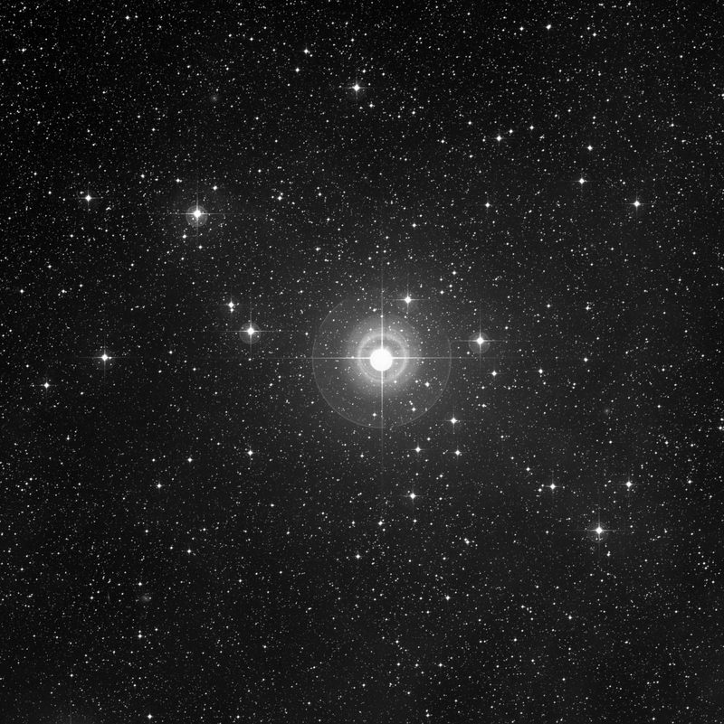
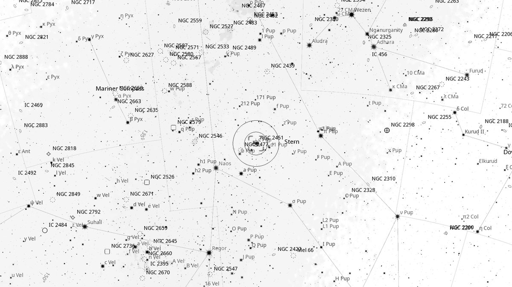
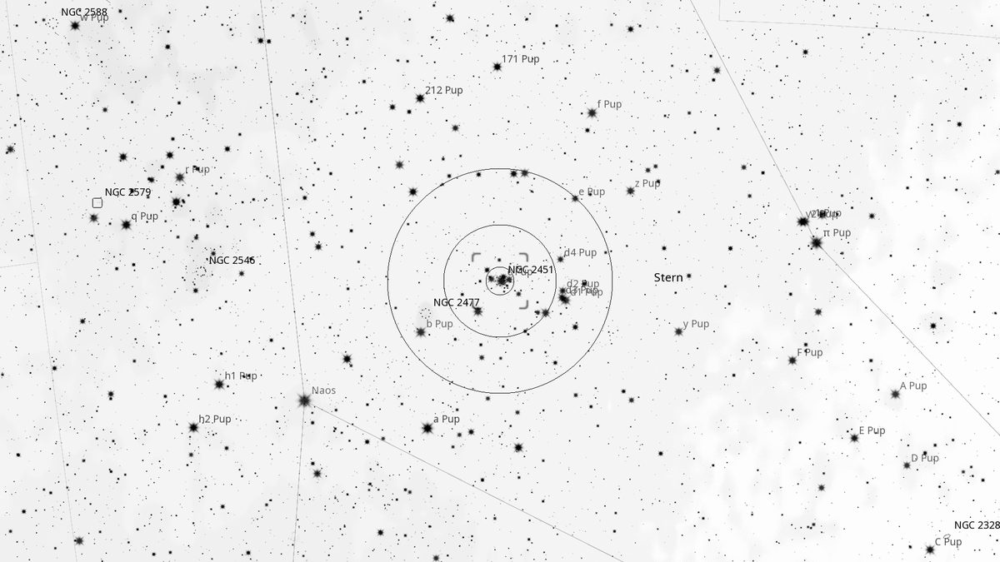
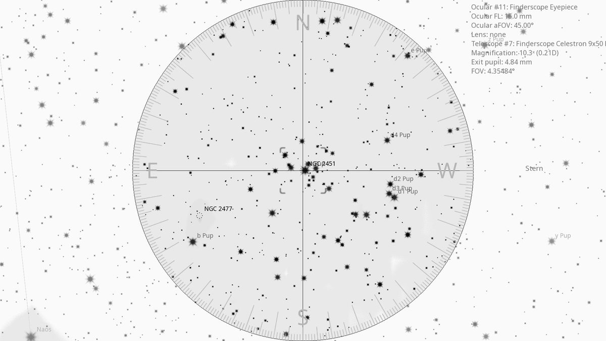
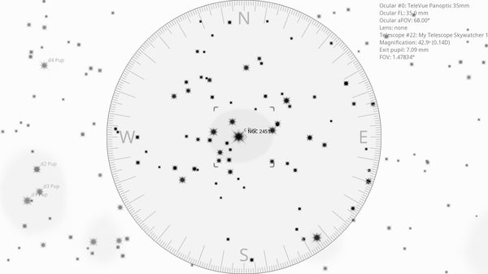

NGC 2451 (Cl)
Open Cluster in Puppis
| R.A. | Dec. | Size | Mag | SB | Cnt.St | Type | Distance | Chart |
|---|---|---|---|---|---|---|---|---|
| 07h 45m 23.7s | -37° 58′ 28.9″ | 45.0′ | 9.5 | 17.5 | II2p | Cl | -- | -- |

Source: POSS-2 UK Schmidt Red (STScI) | Field: 60′ × 60′
Background
NGC 2451 is a bright but sparse open cluster, actually a chance superposition of two clusters at different distances ( 600 ly and 1,200 ly). Naked-eye visible, scattered across 45' on the sky along the imaginary line between ζ and ρ Puppis.
My Observing Notes
30-cm (SkyWatcher 12-inch f/5): Easy naked-eye / finder target along the line between ζ Pup (Naos) and ρ Pup. Bright but visually sparse. Just 0.25° from the dramatically richer NGC 2477 — an excellent contrasting pair.(Friday, March 2026)
References
Charts

Ultra-wide view (~25° field)

Wide-field view with Telrad rings (4°, 2°, 0.5°)

Finderscope view (9×50 RACI, ~4.4° TFOV)

Eyepiece view — 35 mm Panoptic on 12-inch f/5 (1.6° TFOV)